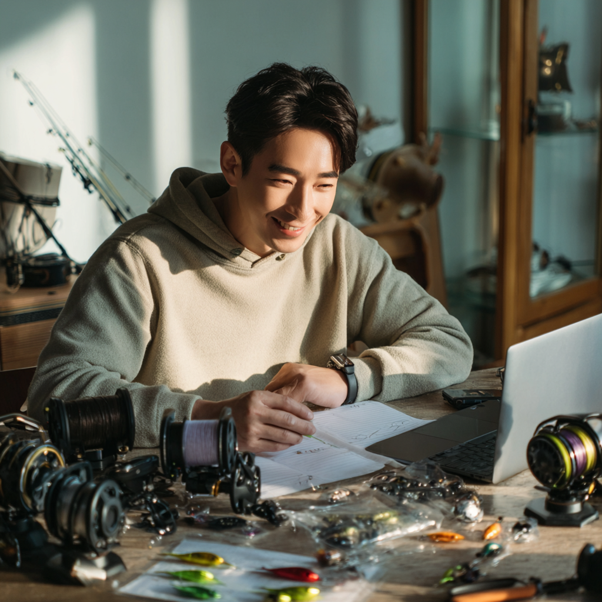

MZ, 낚시에 입문하다
1,000만 낚시 인구 시대의 새 타깃
2025.06
서울에 사는 29세 직장인 수아는 요즘 주말이면 인천이나 안면도로 낚시를 간다. 시작은 <도시어부> 예능이었다. 친구 따라 한 번 출조한 이후, 혼자만의 조용한 시간이 좋아져 낚시에 빠졌다. 요즘은 SNS에서 감성 낚시 룩을 찾아보고, 유튜브로 매듭법도 익힌다. 물고기를 못 잡는 날이 더 많지만, 수아는 개의치 않는다. 고요한 물가에서 시간을 보내는 그 경험 자체가 낚시의 이유가 됐기 때문이다.
낚시는 더 이상 중장년의 전유물이 아니다. MZ세대는 낚시를 힐링과 표현의 도구로 받아들이며, 전통적인 아웃도어 여가를 자기만의 방식으로 재해석하고 있다. 혼자만의 고요한 시간, ‘디깅(digging)’의 즐거움, 그리고 SNS에서의 인증. 낚시는 지금, 가장 MZ스럽게 변주되고 있는 취미 중 하나다.
과연 수아처럼 낚시에 빠진 MZ가 실제로 많은 걸까? 답은 ‘그렇다’에 가깝다. 해양수산부에 따르면 국내 낚시 인구는 2018년 850만 명에서 2024년 1,012만 명으로 증가했다. 2022년 설문조사에서는 20대가 전체 낚시인의 5.7%를 차지했고, 특히 선상낚시에서는 20대 비중이 최근 4년 사이 2배 이상 증가했다는 증언도 있다. 수치만 보면 아직 젊은 세대의 비중은 크지 않지만, 변화의 속도는 무시할 수 없다.
“코로나19 이후 20대 손님이 눈에 띄게 늘었어요. 기존 고객층의 감소를 젊은 층이 메워주고 있습니다.” – 군산선상낚시협회 관계자
낚시 소비층이 바뀌자, 시장도 빠르게 반응하고 있다. MZ세대를 겨냥한 입문자용 풀세트, 감성 낚시복, 룩북형 패키지 등 진입 장벽을 낮춘 제품이 늘고 있다. SNS 기반의 릴스, 브이로그 콘텐츠와 실내 낚시카페 등 체험형 유통도 강화되는 중이다.
입문자 중심 커뮤니티도 활발히 형성되며 정보 탐색과 인증 소비를 결합한 구조가 만들어지고 있다. MZ세대는 물고기를 잡는 행위보다, 자신만의 방식으로 낚시를 재해석한다.
디깅(digging)의 재미: 파고드는 취향
MZ는 좋아하는 것을 정보로 수집하고, 장비로 구축하며, 콘텐츠로 표현하는 세대다. 낚시는 이 ‘과몰입’ 욕구를 만족시키는 최적의 취미다.
콘텐츠화되는 여가: 기록하고, 공유하는 취미
MZ는 ‘하는 것’보다 ‘보여줄 수 있는가’를 더 중요하게 여기는 세대다. 낚시는 SNS 콘텐츠로 변환 가능한 구조를 갖췄다. 결과보다 경험, 성과보다 무드에 가치를 두는 MZ에게 낚시는 이상적인 콘텐츠 재료다.
조용한 몰입: 소셜 탈출형 여가
끊임없이 연결된 삶 속에서 MZ는 점점 ‘비연결의 시간’을 갈망한다. 낚시는 혼자 있는 시간을 정당화하고, 몰입을 허용하며, 주변과 단절해도 ‘이해받는’ 활동이다.
MZ는 단순히 ‘낚시를 한다’기보다, 낚시를 자신의 취향으로 ‘해석’하고, 경험 전체를 스타일링한다. 웨더몬스터는 이 흐름 위에 있다.
감성도 기능도 갖춘 낚시복 브랜드는 아직 많지 않다. 웨더몬스터는 도시적 감각과 아웃도어 기능을 겸비한 언어와 제품을 만들 수 있는 브랜드다.
Insight
- 여성·입문자 대상 라이트 패키지 기획
- ‘오늘 물가 룩’ 릴스 콘텐츠 시리즈
- 감성 낚시 V-log 연계 룩북 캠페인
- “첫 낚시, 뭘 입죠?” 콘텐츠 시리즈화
- 브랜드 메시지: "낚시를 감성으로 번역하다" / "날씨를 입는 사람들, 웨더몬스터"